About Me
Fatemeh Omidi
I am an environmental engineer and water resources researcher interested in computational modelling, mathematical modelling, and sustainable water resources management.
Research Interests
Water Resources Management · Environmental Modelling · Mathematical Modelling · Urban Water Systems
Education
Master's Degree in Environmental Engineering
University of Tehran
Academic Profiles
Research & Projects
Optimizing the spatiotemporal configuration of water quality monitoring networks in reservoirs using anisotropic Bayesian maximum entropy method
Journal: Journal of Contaminant Hydrology
Status: Published
Abstract: Variations in water quality along the length and depth of a reservoir reveal anisotropic conditions, which pose significant challenges when designing effective monitoring networks. Geostatistical techniques like Bayesian maximum entropy (BME) have proven effective in designing monitoring systems, but they fall short when it comes to planning water quality monitoring in the depth and length of reservoirs. This paper introduces a novel approach for designing long-term, routine water quality monitoring networks specifically tailored for deep reservoirs. Due to the considerable anisotropy in the data and the large length-to-depth ratio of the reservoir, we modeled the anisotropies by scaling the longitudinal distances and rotating the coordinate axes. To examine long-term variations in water quality within reservoirs, a calibrated CE-QUAL-W2 hydrodynamic and water quality simulation model was employed, along with a regular hexagonal grid pattern to determine potential locations for monitoring stations. The proposed methodology outlined the ideal configuration for a reservoir water quality monitoring network, specifying the number of monitoring stations needed and the sampling frequency. The quality monitoring network was designed based on two crucial criteria: the variance of estimation error of the BME method and the sampling cost. The BME method, which can integrate information from various sources, including both hard (deterministic) and soft (stochastic) data, reduces the variance of the estimation error compared to traditional geostatistical methods, leading to more accurate estimates. Using the evidential reasoning (ER) method based on the criteria mentioned earlier, we ranked various alternatives for the locations of monitoring stations and their sampling frequencies. We applied the proposed methodology to the Karkheh Dam reservoir, the largest reservoir in Iran, which faces notable challenges related to thermal stratification and water quality. The results suggest a monitoring network of 10 sampling stations with a 75-day sampling interval for effective water quality management. This approach offers a robust framework for water quality monitoring and resource management in large reservoirs by helping decision-makers balance accuracy, cost, and uncertainty to design resilient and cost-effective monitoring networks.
View DOI →Water-energy-food-greenhouse gases nexus management in urban environments: A robust multi-agent decision-support system
Journal: Journal of Sustainable Cities and Society
Status: Published
Abstract: Conceptual urban water metabolism (CUWM) models provide a holistic view of the efficiency of urban water systems. These models can be linked with multi-agent reinforcement learning (MARL) models to mimic stakeholders’ reactions to various strategies. However, the outcomes derived from CUWM-MARL models come with uncertainty. As a result, this paper introduces a decision support system (DSS) that is aware of these uncertainties and uses this information to select robust management strategies based on the output of CUWM-MARL models. First, future scenarios are generated by exploring all combinations of critical values of deeply uncertain variables and values of uncertain variables sampled from an appropriate multivariate copula distribution. Then, a computationally efficient surrogate model is developed to alleviate the computational load of the MARL submodel. The surrogate model is run through all future scenarios to calculate the system’s key performance indicators (KPIs) for each management strategy. Urban water managers can use these KPIs and social choice methods to find consensus management strategies. The proposed methodology has been implemented in the western part of the Tehran metropolitan area, Iran. This study evaluates 26 management strategies consisting of various projects, including reducing water distribution network leakage, implementing urban demand control projects, and utilizing semi-centralized or decentralized wastewater treatment plants. The strategy chosen by the uncertainty-aware DSS enhances the total utility and fairness indices by 125% and 4%, respectively. Moreover, it effectively improves groundwater quality, reduces energy consumption and greenhouse gas emissions, and enhances water supply reliability, ultimately contributing to farmers’ job security.
View DOI →A Centralized PPO-Based Multi-Agent Decision Learning Framework for Urban Water Management, implemented with OpenAI Gym and Stable-Baselines3
Journal: Journal of Cleaner Production
Status: Under Review
Abstract: Urban water systems are complex social-ecological systems in which multiple water users interact under competing demands, environmental constraints, and scenario-dependent resource conditions. Conventional physical simulation models can represent hydrological and water quality dynamics, but they have limited capacity to capture adaptive decision-making and learning among heterogeneous stakeholders. This study develops a centralized Proximal Policy Optimization (PPO)-based multi-agent decision-learning framework for urban water management. The framework couples a customized OpenAI Gym environment with the Coupled Modeling of Urban Water Metabolism and Ecosystem Services (CMUWMES) framework and is implemented using Stable-Baselines3. In the proposed architecture, 13 water-consuming agents are represented through agent-specific demand, groundwater level, nitrate concentration, and sector-specific constraint conditions, while a centralized PPO controller learns a joint groundwater withdrawal policy, generating coordinated withdrawal decisions for all represented agents. The reward structure combines demand satisfaction with penalties for excessive groundwater abstraction, with nitrate threshold penalties applied where water quality is a primary concern, thereby guiding the learned policy toward environmentally constrained decision-making. The framework is applied to the western region of Tehran within the Kan River Basin, where surface water allocation, groundwater dynamics, nitrate mass balance, energy consumption, and greenhouse gas (GHG) emissions are simulated under alternative management scenarios. The results indicate that the centralized PPO controller can generate stable and coordinated decision patterns, improve groundwater management performance by approximately 10.5% (groundwater level) and 40% (nitrate concentration reduction) relative to a static baseline, and produce indirect co-benefits in energy consumption and GHG emissions through changes in withdrawal and allocation decisions. Overall, the proposed framework offers a complementary decision-support approach for representing adaptive water-use decision-making and evaluating coordinated management strategies in complex urban water systems.
Gallery
A collection of academic milestones, university memories, field visits, and landscapes from Iran.
Master's Thesis Defence
A memorable milestone marking the completion of my master's studies.
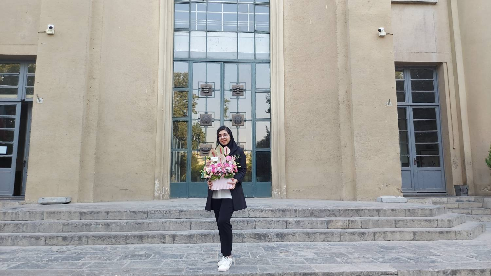
Thesis defence
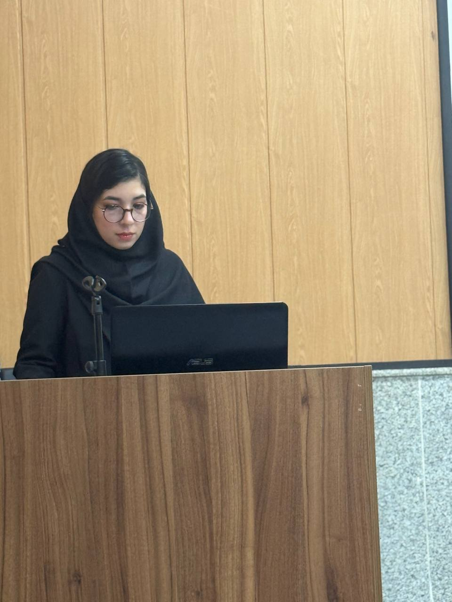
A special academic moment
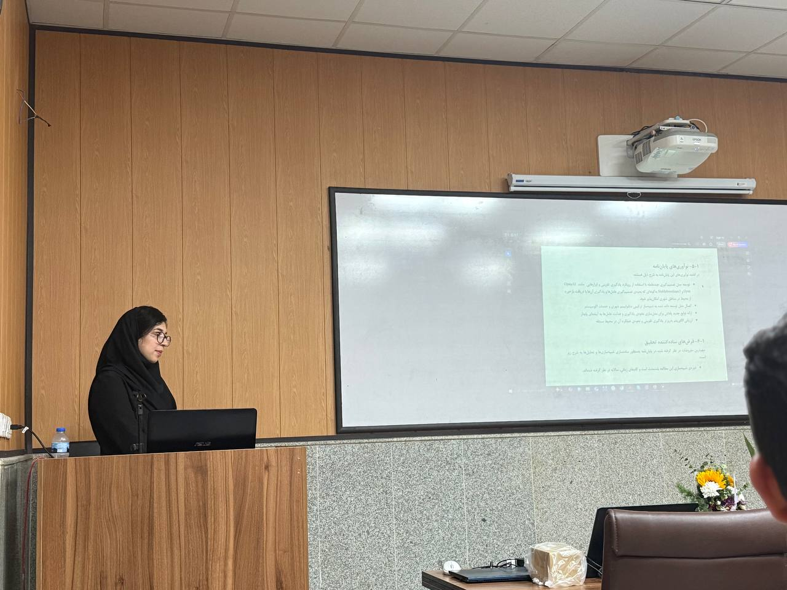
Celebrating the milestone
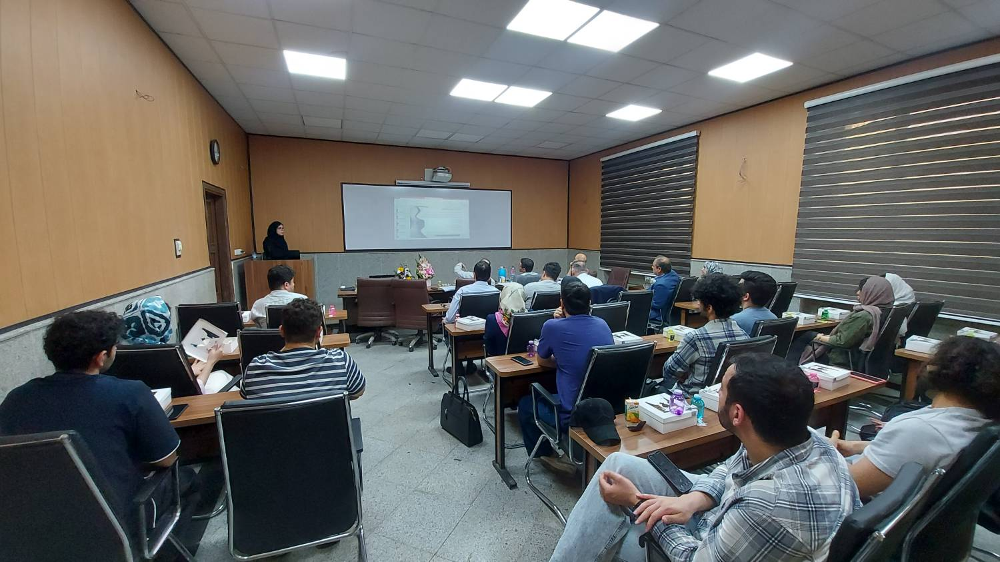
A memorable day
Nature at the University of Tehran
Quiet corners, seasonal colours, and everyday views from the university campus.
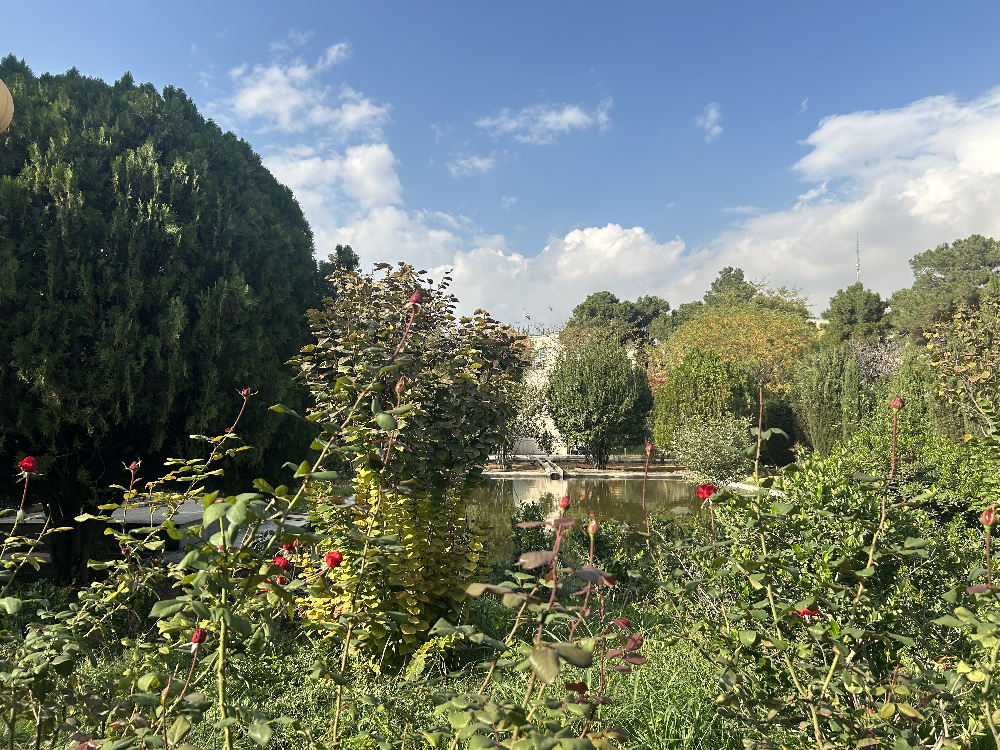
Campus views
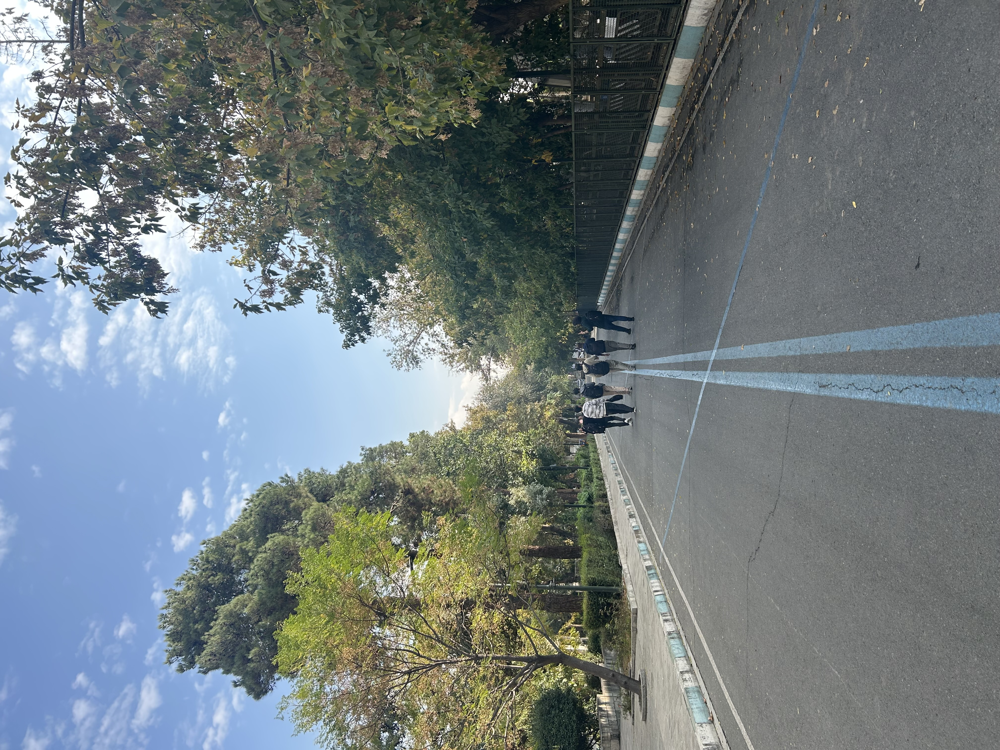
Green spaces
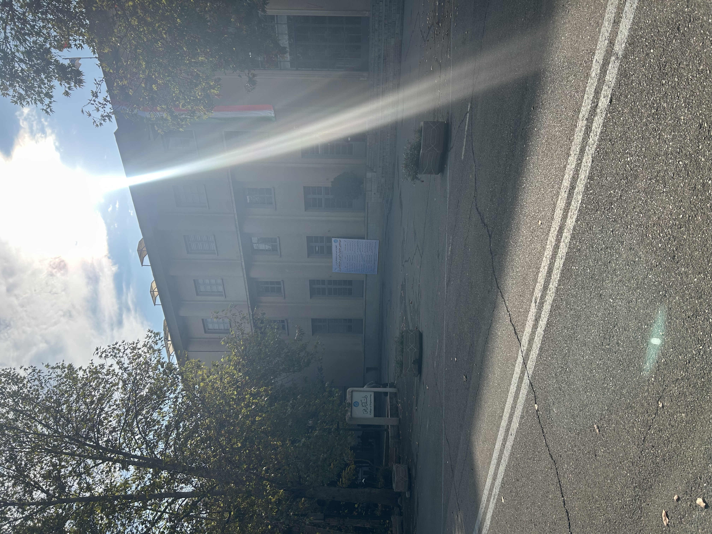
University in different seasons
Field Visits & Nature in Iran
Snapshots from field visits and journeys through some of Iran's beautiful natural landscapes.
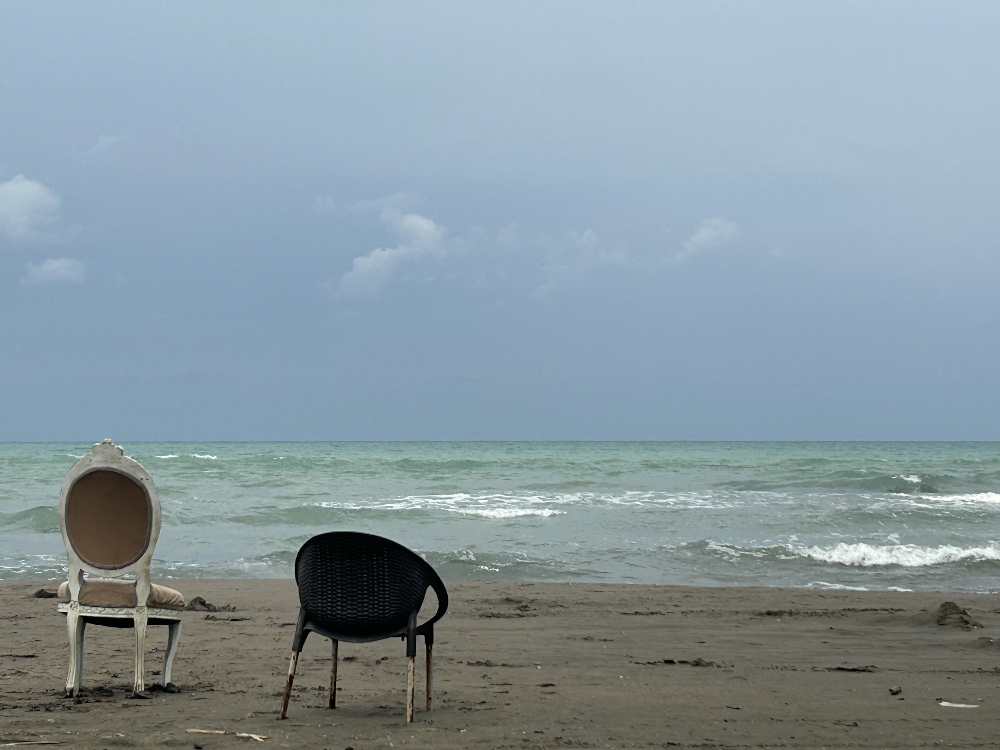
Field visit
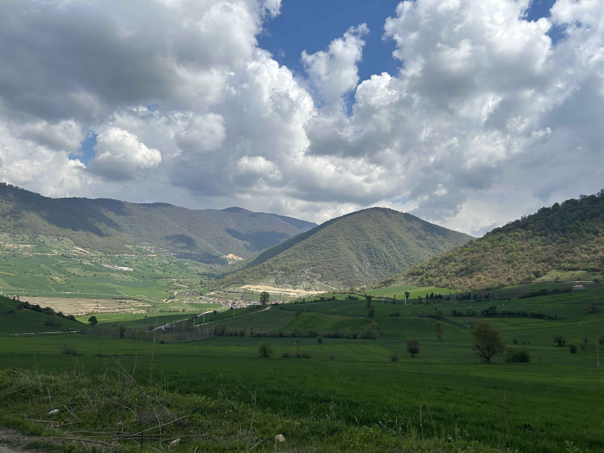
Iran's landscapes
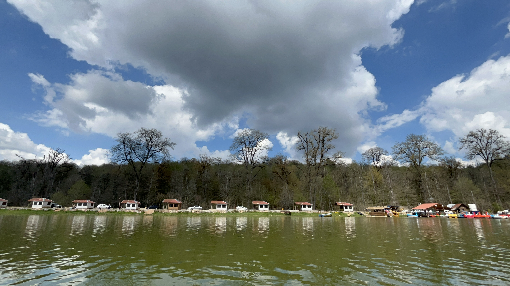
Untouched nature
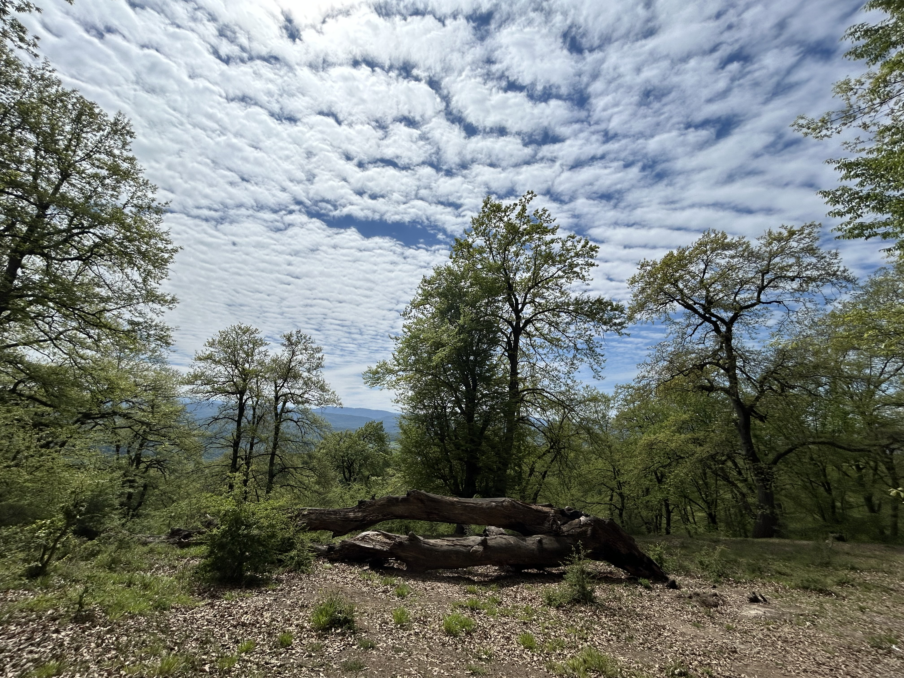
Chakhani Jungle
Interests
A few subjects I enjoy exploring beyond my academic and research work.
Law, Justice & Philosophy
I am interested in questions of justice, moral philosophy, legal reasoning, and the ethical dimensions of social and political life. I particularly enjoy discussions that challenge us to think critically about difficult questions and consider different points of view.
Michael Sandel – Justice: What's the Right Thing to Do?
A lecture series by Harvard professor Michael Sandel that explores justice, equality, rights, and moral reasoning through thought-provoking cases and classroom discussions.
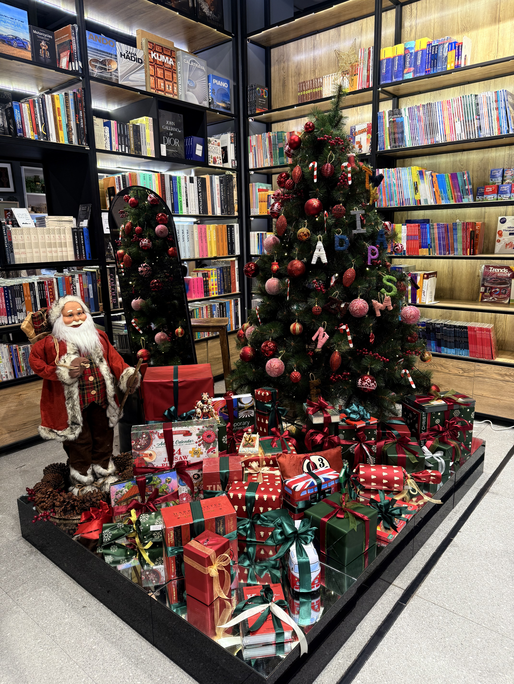
Reading & New Ideas
I enjoy exploring ideas that broaden my perspective, encourage thoughtful conversations, and help me better understand people, society, and the world.
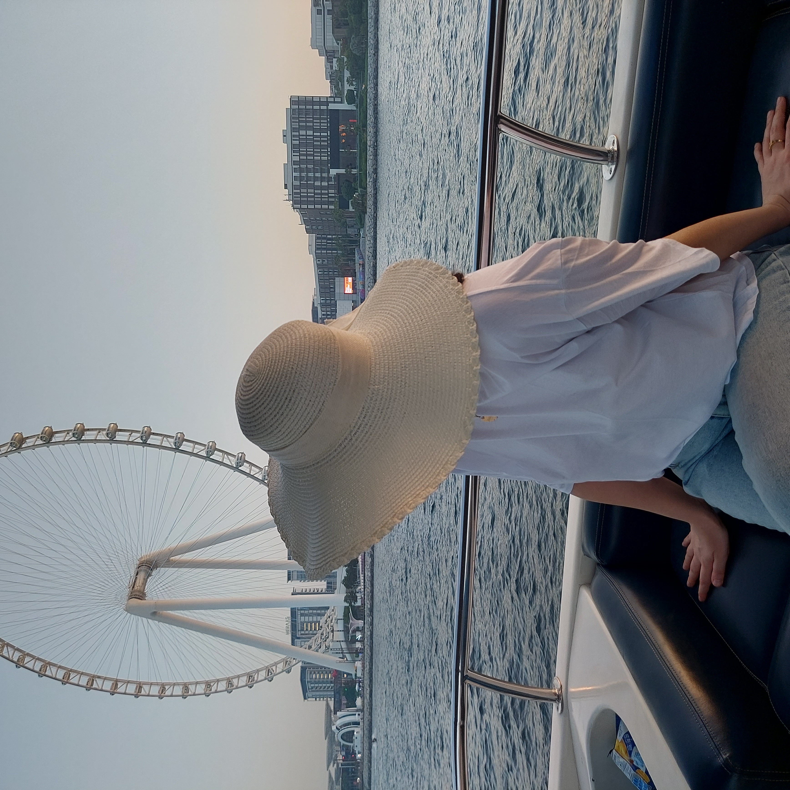
Nature & Exploration
I enjoy spending time in nature, discovering unfamiliar places, and experiencing the landscapes and natural diversity of Iran.